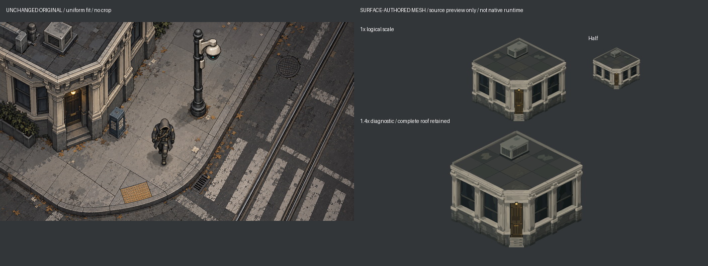
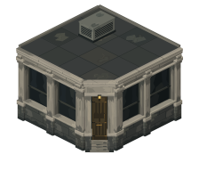
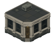
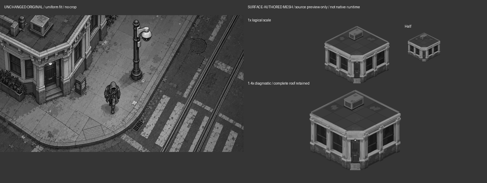
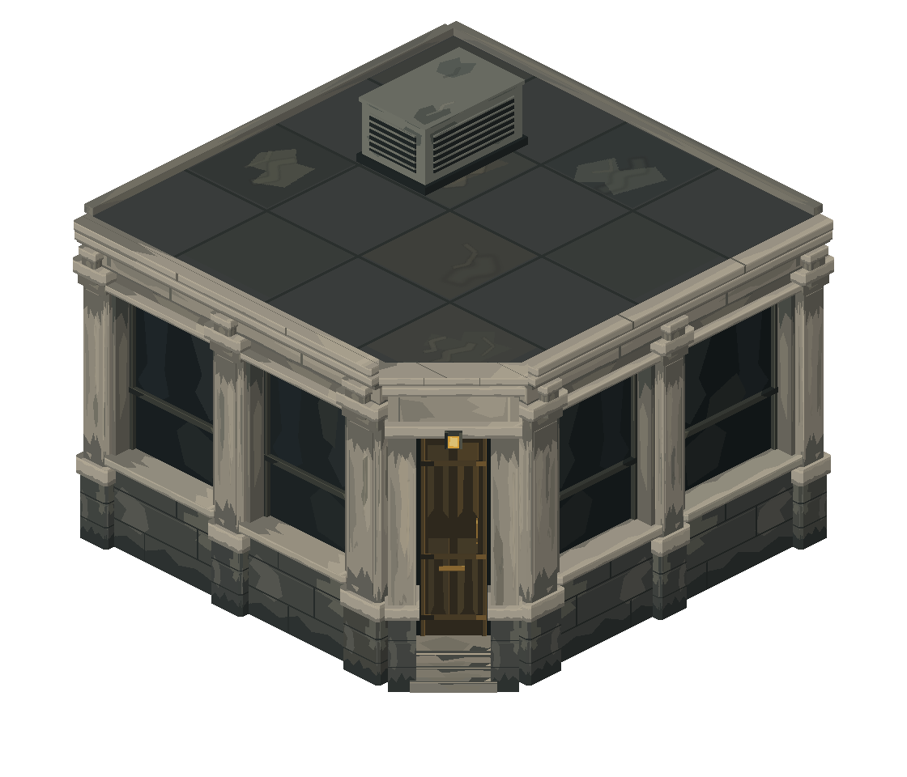
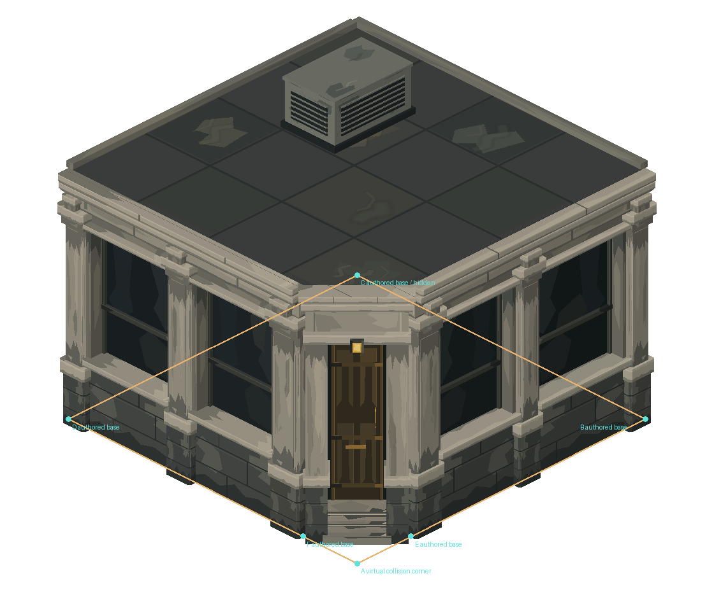
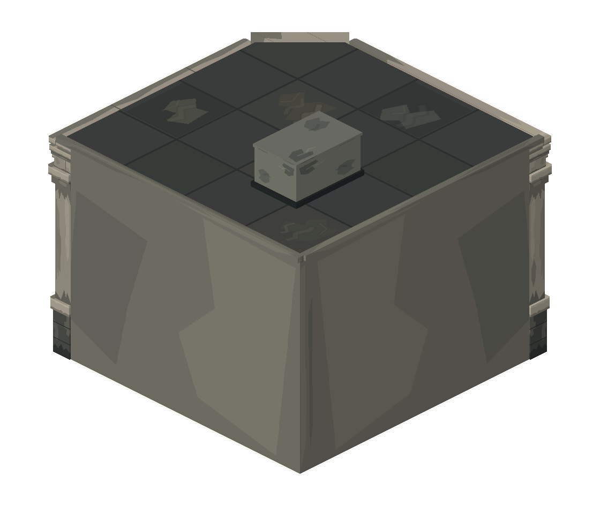

Source review only, not native runtime evidence or accepted painterly art. Actual entry/window depth and trim improved, but pigment edges, roof and glass remain model-like. Two bounded visual attempts retained. Collision is the unchanged blocked 128×128 rectangle, including the visible chamfer/steps.







Source handoff and limitations · Editable mesh · Surface paint · Authored brush paths · Registration · Focused tests
Retained first visual attempt, honest topology failure, and half-scale alpha failure. Numerical normalization correction did not change raw source pixels. No owner acceptance or production admission.